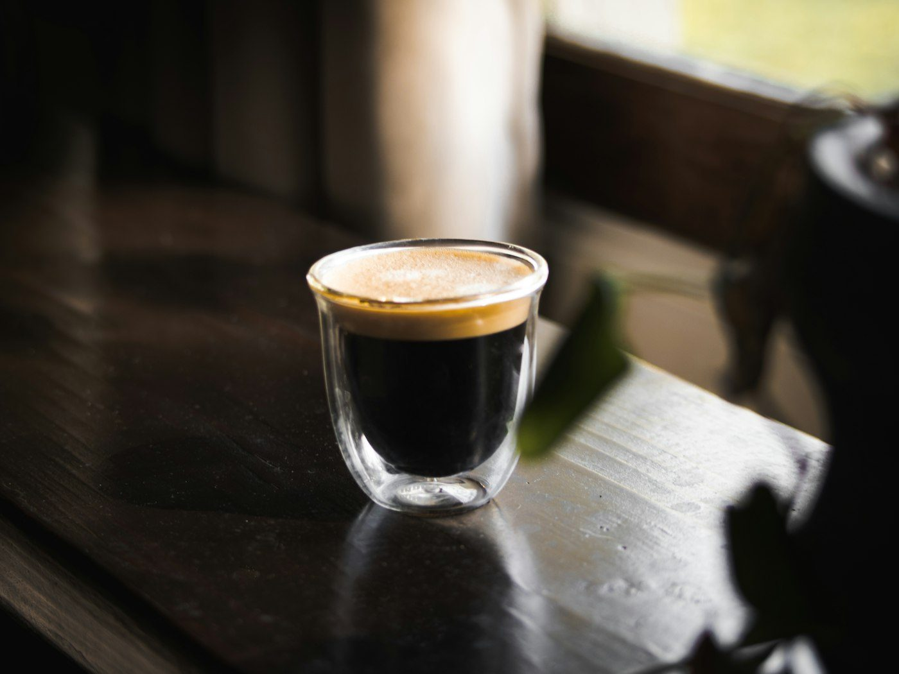
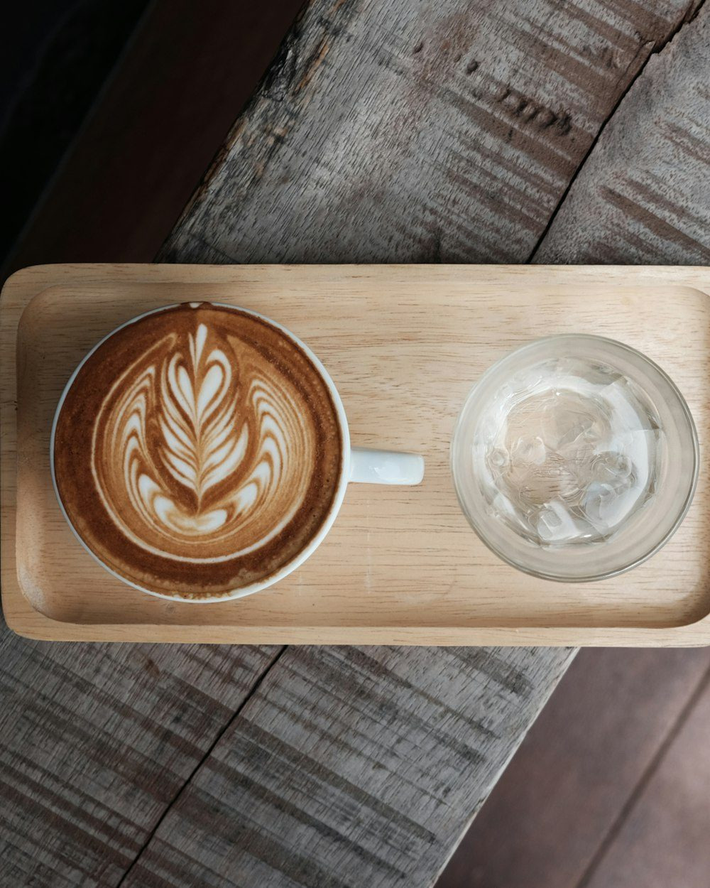
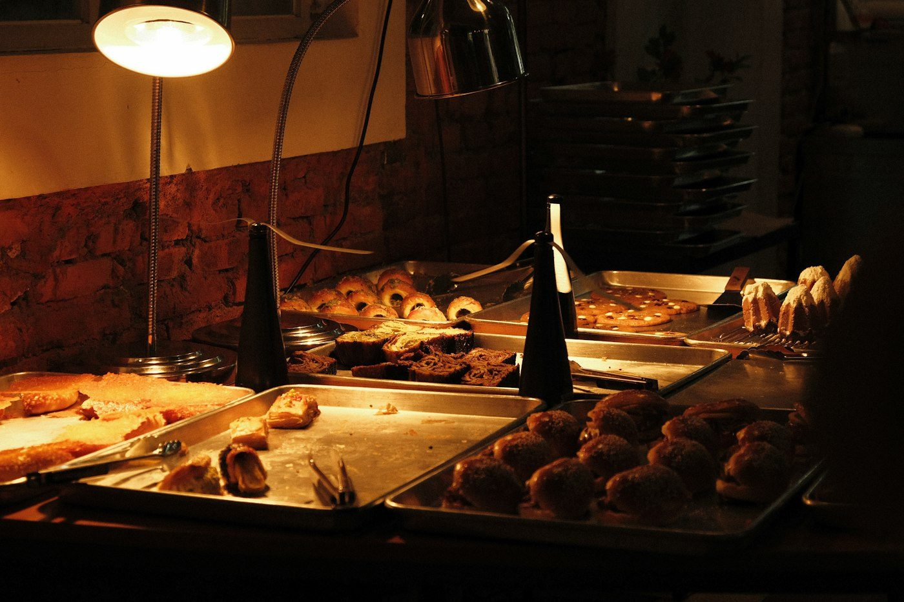
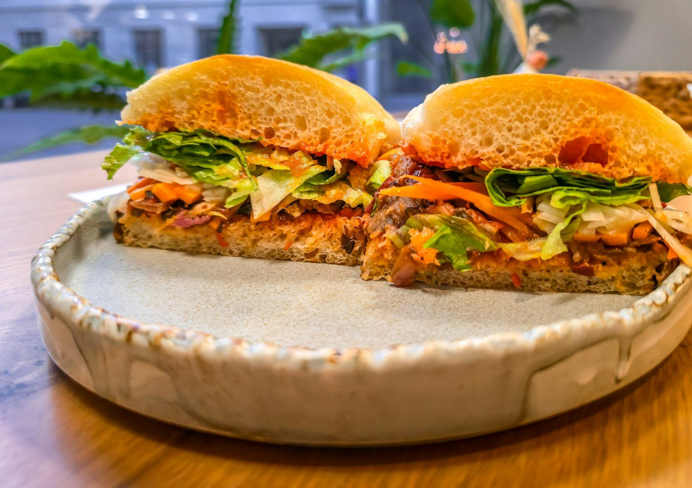
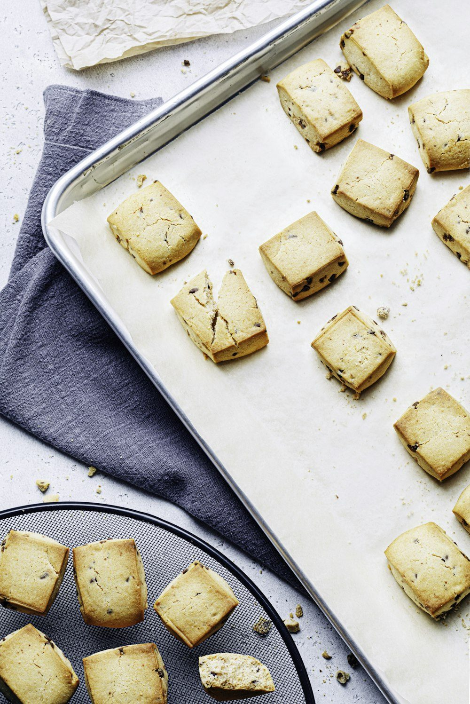
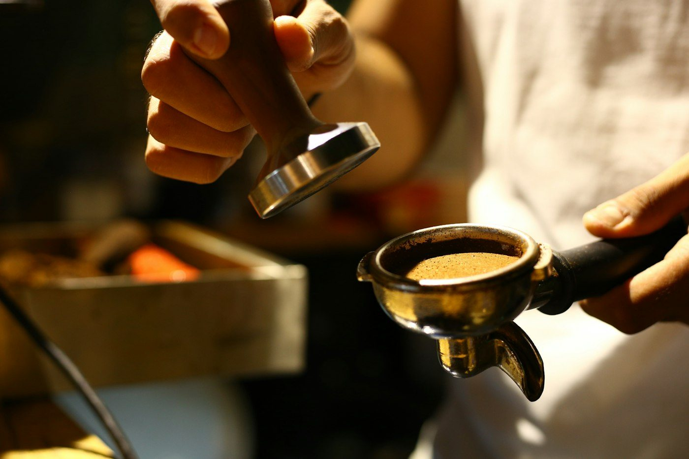
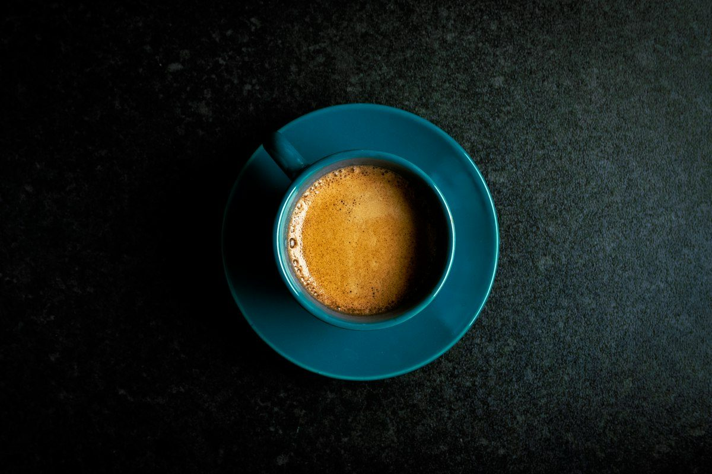
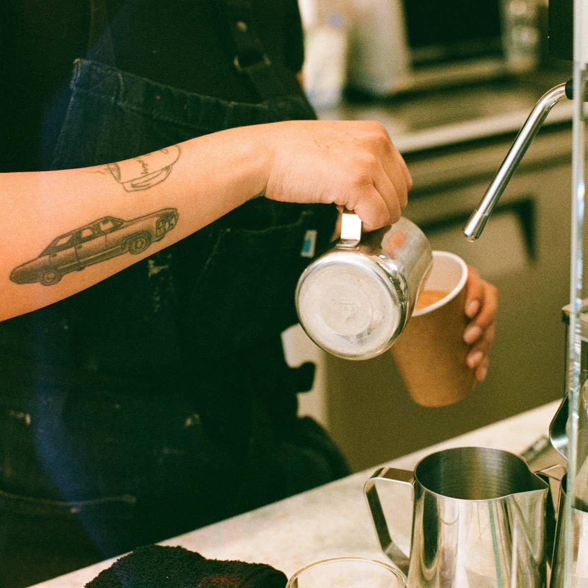
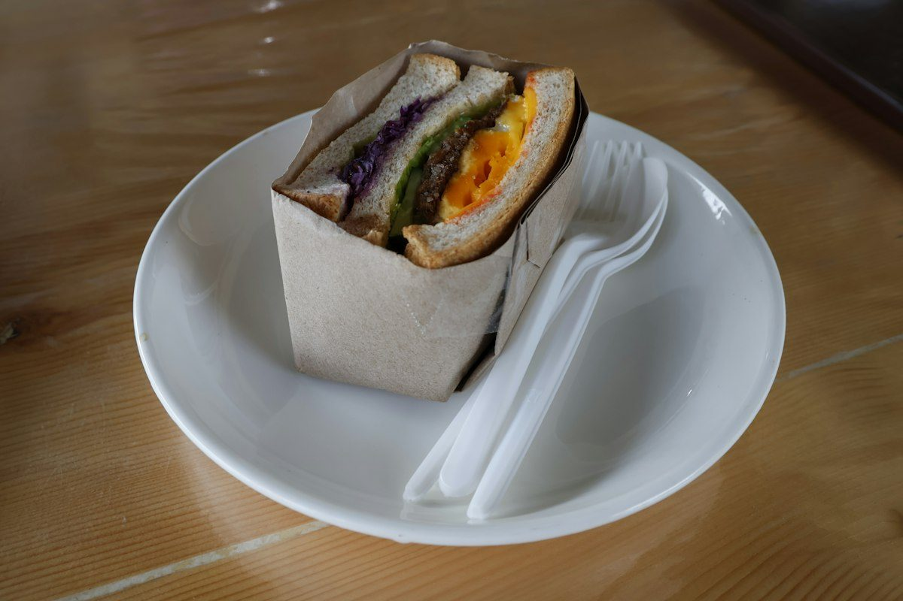

Coffee and a bakeshop on Broad Street.
Crema Brew is a coffee shop and bakeshop at 914 Broad St in New Bern. Come in for espresso drinks, baked goods and lunch.
Monday to Saturday 7 to 3. Closed Sunday. Call ahead to confirm.
So, what is crema?
Crema is the golden foam on top of an espresso shot.
It is also the first word in our name.
- Crema
- Espresso

Pick your door.
Coffee and drinks, the bakeshop, or lunch. Come for one, or all three.
-

Coffee and drinks
Coffee, espresso drinks and more to sip.
-

Bakeshop
Baked goods to go with your coffee.
-

Lunch
Lunch is on the menu too.
Want to know what we are serving? Call to ask about the menu.
Call (252) 288 5381A closer look.
Espresso drinks, baked goods and lunch, up close.





Come see us in New Bern.
We are at 914 Broad St. Call ahead to confirm hours before you come.
Hours
- Monday to Saturday
- 7 to 3
- Sunday
- Closed
Call ahead to confirm.